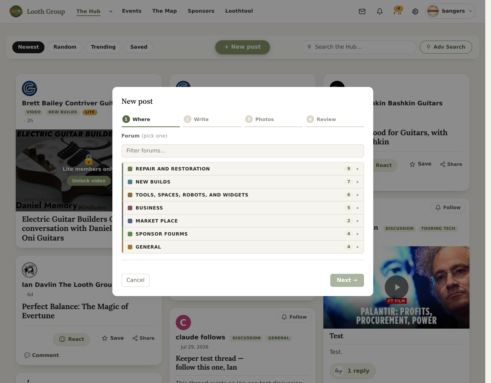
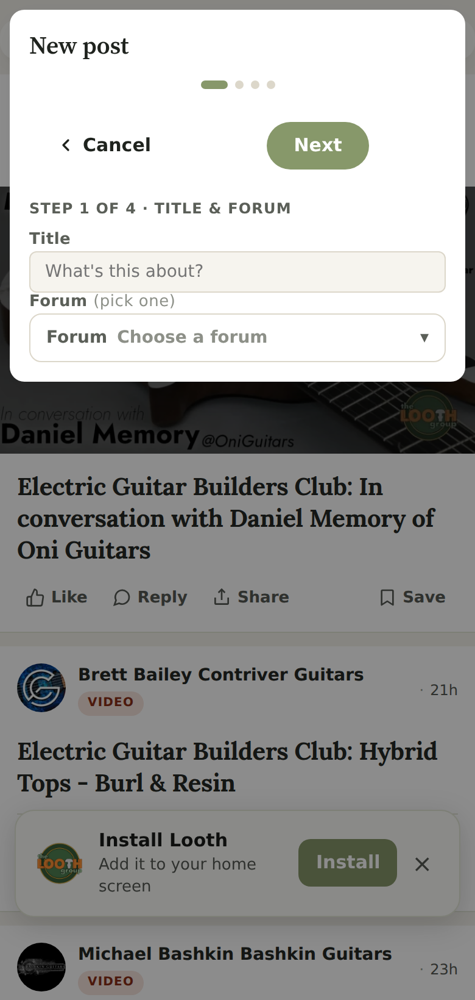

Your call: “part of the compose package in the new post in the hub… toggle between discussion and loothprint… two different forms.” This is that, drawn on your real composer. The Loothprint form itself is finished and photographed on the first page; this is only about where it lives and how you get to it.

/hub/?compose=1, signed in as a member. Four steps —
Where · Write · Photos · Review — starting with the forum picker.One control, directly under the title, above everything that changes. Tap it and the whole body of the dialog is replaced — because these really are two different forms, not one form with a setting.
Discussion — untouched, exactly as today
Forum (pick one)
Four steps, forum first. Nothing moves.
Loothprint — the single screen you approved
What’s it called?needed
Show it offneeded
The print filesneeded
What kind of print is it?needed
No steps — one screen, scrolled. No forum to pick: a Loothprint doesn’t live in a forum.
Why the toggle sits above the step rail rather than inside step 1. The rail itself is one of the things that changes: a discussion has four steps, a Loothprint has none. A control that changes the steps cannot live inside them.
Today

With the toggle
What’s it called?needed
Show it offneeded
The print filesneeded
The toggle is the full width of two taps — it does not compete with the close button.
The Loothprint form is long, and you already think this modal is cramped. That is your own open complaint — “resizable, with text scaling” (backlog 10). Full height, the form is about 1,700px on a laptop; in a dialog it becomes a scrolling panel. I think that is still fine, because the five needed things are all above the fold and the four extras stay folded — but it is the one place this could feel worse than the full-page version, and you should hear it from me now rather than notice it later. If it does feel cramped, the fix is the same fix backlog 10 already asks for.
The toggle asks the server for the other form and swaps it in — the Loothprint half is the route that already exists and is already proven end to end, just rendered without its page furniture. Nothing about the form, its saving, or its photo uploads changes; only where it is shown.
| Piece | State |
|---|---|
| The Loothprint form, its save path, its uploads | built and proven — a real post through the real route builds its page |
| The composer, the wizard, the discussion flow | untouched |
| The toggle, and serving the form without page furniture | this is the build |
Also now true, from your other ruling: every member gets this. The allow-list and the “some types need approval” path are deleted, not switched off. The flag is the only thing holding it back, and it stays off until you say.